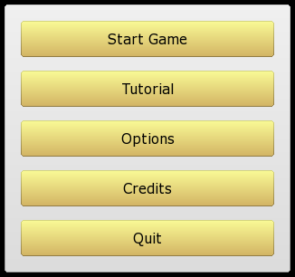

When the game starts you are presented with the above menu screen.
Start Game takes you to a sub-menu where you can start various types of games. See below for details.
Tutorial lets you play through a short tutorial which will explain the basics of the game. Although the tutorial does not cover all aspects of the game, it should give you enough information to get started.
Options allows you to adjust knight controls and graphics settings. See Game Options for details.
Finally, Credits allows you to see who is responsible for this software, and Quit exits the game.
After selecting Start Game you will need to select one of the following options:
(This exists only in the Steam version of Knights.)
This takes you to a screen where you can either create a new multiplayer Knights game, or join an existing game. Once you are in the game, you will also be able to invite your Steam friends to join.
Host migration is supported – if the host leaves, Steam will automatically select another player to take over hosting duties. The game should automatically resume after the migration is complete.
To connect to a game, you must be running the same version of Knights as the host, and you must have identical game data files. Games that don't meet these requirements will be listed as "incompatible", and you won't be able to join.
It is possible to leave a game mid-way through, and then reconnect again later. If you do leave, your knight will still exist in the dungeon while you are gone, and can be killed by the other players. If killed, your knight will not respawn until you rejoin the game.
It is possible to observe a game, without actually joining in. To do this, first join the game as normal, then click the "Observe" button at the bottom right of the Quest Selection screen.
Alternatively, if you join a game that has already started, you will automatically join as an observer. (It is not currently possible to enter a game half-way through; you must wait until the next game starts if you wish to play).
These options allow you to play Knights over a local area network (LAN). Once a game is created, other players should be able to see it in the list automatically (this uses mDNS discovery); if this doesn't work, then you can manually type in the address to connect to.
LAN games use UDP port 16399, so if you can't connect, check your firewall settings to make sure that nothing is blocking that port.
If you join a LAN game half-way through, then you will become an observer. See "Observing" above.
Note that LAN games don't support host migration. If the host player quits the game, then all other players will be automatically disconnected. However, non-host players are free to disconnect at any time, and reconnect again later, if they wish.
This option allows two players to play the game using a single computer. One player takes the left half of the screen, and the other the right half. This works best if you use a piece of cardboard or other divider to make sure that players cannot see what is happening on the other player's screen. (This really does improve the game – it is no fun being invisible if your opponent can just look over at your screen to see what you are doing!)
The split screen mode is limited to two players only. To play with three or more players, you must set up a LAN or online game.
Also note that only the "old" control system can be used in split screen games. For more about control systems, see Controls.
This allows you to play a quest alone, with no opposition from other knights (although the vampire bats and zombies will still try to stop you). This is useful as a "practice mode" or for experimenting with various quests. Alternatively, you can set a time limit and try to complete quests against the clock.